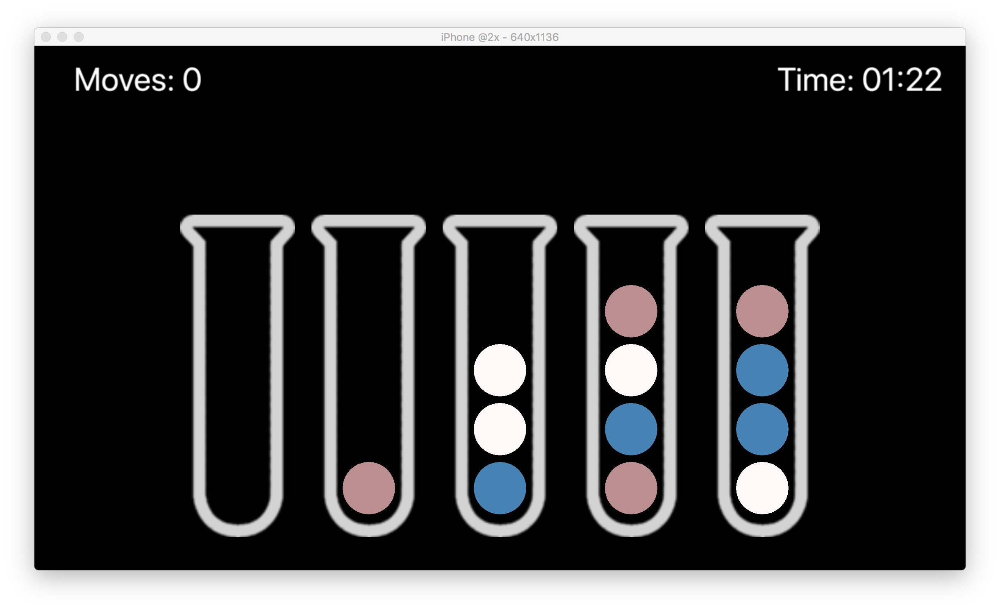

This is a simple puzzle game, where the user needs to reorder the coloured drops in a number of test tubes so that each tube is either empty or filled with drops of one colour. You are not allowed to place a drop of one colour on top of a drop of another colour. Features include:
Variable number of test tubes and variable number of coloured drops.
Level are timed.
Configurable level setup.

Example of game layout
Basic implementation
To see how well you understood the Star Explorer I'm only giving you the structure of the game. You will need to implement the body of the listed functions yourselves.
To start:
Create a new project called Chemistry Sort to run on iPhone in landscape mode.
Download and extract the contents of the assets archive. This archive contains images (only one!) and some utility code.
Game Data
Copy the rng.lua and colorsRGB.lua into the root folder.
Place the following code into your main.lua file.
1 2 3 4 5 6 7 8 910111213141516171819202122
localFULL=4-- number of drops to full a tubelocaltubes={}localselectedDroplocalrng=require("rng")localcolorsRGB=require("colorsRGB")localcolors={"snow","steelblue","rosybrown","orchid","wheat","thistle","teal"}localmoveslocaltimeRemaininglocaltimeRemainingTimerlocallevelOver=false
Comments:
Test tubes are stored in table tubes and
Each test tube will be an instance of assets/tube.png with dimensions 70 x 197.
Test tubes are centered horizontally with a gap of 80. This will allow up to 7 test tubes.
Each tube will have a table property drops that stores the drops in that tube.
A move consists of two phases. Pick up a drop from one tube and add it to another tube. selectedDrop stores the drop during the move.
Test functions
First implement the following test functions
1 2 3 4 5 6 7 8 9101112131415
localfunctionisEmpty(tube)-- Empty tube = has no dropsendlocalfunctionisFull(tube)-- Full tube = has FULL dropsendlocalfunctionisSolved(tube)--- complete = is full AND all drops have the same color endlocalfunctionisAllSolved()-- Are all tubes complete (or empty)end
Add and remove drop functions
Next implement two functions that will be used later to construct a move.
1 2 3 4 5 6 7 8 910111213141516171819202122232425
localfunctionaddDrop(drop,tube,animate)-- place drop into tube. -- change drop position so that it is 'inside tube' and 'on top' of other drops -- append drop to tube drop collectionendlocalfunctionremoveDrop(tube,animate)-- remove and return the top drop from given tube or nil.-- if tube is empty then return nill-- take the top most drop and move it to top of test tube.-- remove drop from tube drop collection.-- return dropendlocalfunctionmoveDrop(event)-- Pick up/drop a drop from/to selected tube.-- we will come back to this laterend
localfunctionstartLevel(level)-- create level with given parameters-- number of colors, number of spare tubes, level difficulty and durationlocalnColors,nSwap,nDifficulty,duration=unpack(level)localnTubes=nColors+nSwap-- instantiate all of the tubes-- put in correct position-- table property drops to store drops-- add tap event listener to call moveDrop-- first nColors tubes start being full of drops of one colorrng.randomseed(42)-- using nDifficulty randomise the starting position-- possible algorithm: -- pick random source and destination tubes and move drop if allowed.-- repeat based on nDifficulty-- initialise game variables (moves, etc)-- start countdown clock -- Use timer.performWithDelay with 1 second delay-- Need function updateClock to update timeRemaining and text labelendstartLevel({3,2,20,90})
Moving a drop
1 2 3 4 5 6 7 8 91011121314
localfunctionmoveDrop(event)-- Pick up/drop a drop from/to selected tube.localtube=event.target-- if selectedDrop is nil then -- remove drop from selected tube and save it to selectedDrop-- place selectedDrop to selected tube if allowed-- update moves count-- if game is solved-- stop countdown clockend
Improvements / Assignment
Using the shell provided complete the game and implement the following improvements.
(max grade is an estimate.)
Basic improvements (max 40%)
Convert to using scenes (splash screen/Menu, high scores, and game).
Support for reset level.
Support unlimited undo.
Support for canceling a move, i.e., pick up a drop and place it back down in same tube